Weighted Survival Analysis Examples
Source:vignettes/weightedsurv_examples.Rmd
weightedsurv_examples.RmdOverview
In this draft vignette of the weightedsurv package (Leon 2024) we illustrate various weighted
survival analyses with two breast cancer datasets available in the base
R survival library (Therneau
2023) both evaluating hormon replacement therapy in comparison to
chemotherapy. The gbsg trial (Schumacher et al. 1994) was randomized, whereas
the rotterdam study (Royston and
Altman 2013) was observational; Wherein for comparisons of the
non-randomized therapy, in contrast to un-adjusted comparisons,
propensity-score adjustment (Cole and Hernán
2004) appears to suggest a stronger impact consistent with the
randomized trial.
Survival Analysis and KM Plotting
Survival analysis functions allowing for time-dependent and subject-specific (eg, propensity-scores) weighting.
Weighted estimation for: Cox model; Kaplan-Meier treatment survival curves as well as treatment difference along with point-wise and simultaneous confidence bands; and Restricted mean survival time (RMST, Uno et al. (2014)) comparisons where RMST estimates are evaluated across all potential truncation times (point-wise and simultaneous bands).
Summary: Weighted Survival Analysis Capabilities
- Weighted Kaplan-Meier and Log-Rank Analyses
- The code provides functions to compute and plot weighted Kaplan-Meier survival curves for two or more groups, using custom weights. Weighted log-rank statistics can be calculated using flexible, time-dependent weighting schemes (e.g., Fleming-Harrington, Schemper, Xu & O’Quigley, Maggir-Burman, and custom schemes). Functions such as wlr_dhat_estimates, wlr_cumulative, and KM_estimates (in km_wlr_calculations_helpers.R) allow for the calculation of weighted risk sets, event counts, and survival probabilities.
- Weighted Cox Proportional Hazards Models
- The code supports fitting Cox models with custom weights, including rho-gamma weights for weighted log-rank tests. Functions like cox_rhogamma and cox_score_rhogamma (in weightedCox.R) implement weighted Cox regression, including score calculations, confidence intervals, and resampling for inference. The code allows for root-finding and score-based estimation in the presence of weights.
- Flexible Weighting Schemes
- The weighted_helpers.R file provides a framework for defining, validating, and applying a variety of weighting schemes to survival data. The get_weights and extract_and_calc_weights functions allow users to specify and compute weights for each subject and time point, supporting both standard and custom schemes. Visualization of weight functions over time is supported via plot_weight_schemes.
- Counting Process Data Preparation
- The code can transform raw survival data into a counting process format, which is essential for weighted analyses. Functions in df_counting.R and df_counting_helpers.R prepare risk sets, event counts, and weighted summaries for each group, supporting both unweighted and weighted analyses.
- Weighted RMST (Restricted Mean Survival Time)
- The code includes functions for calculating cumulative RMST and confidence bands using resampling, with support for weights (rmst_calculations.R).
- Plotting and Visualization
- Weighted survival curves, confidence intervals, and risk tables can be plotted using functions in kmplotting_helpers.R. The plotting functions support the display of weighted KM curves, weighted risk tables, and annotation of statistical results.
Analysis functions
df_counting
Prepares a comprehensive dataset for survival analysis using the counting process approach. Computes risk sets, event counts, Kaplan-Meier estimates, log-rank (Fleming-Harrington () weights) and Cox model results, and quantile estimates for two groups (e.g., treatment and control), optionally handling (subject-specific case) weights (such as inverse probability weights) and stratification.
Time-dependent weights for log-rank statistics are implemented via wt.rg.S function: Supporting a variety of commonly used and custom weighting schemes for weighted log-rank and related tests. The function is flexible and can be used for Fleming-Harrington, Schemper, Xu & O’Quigley (XO), Maggir-Burman (MB), custom time-based, and exponential variants of Fleming-Harrington weights.
Subject-specific (case-weights) are also included in order to implement propensity-score weighted analyses.
Key Features: - Calculates weights for use in weighted
log-rank and related survival tests. - Supports standard
Fleming-Harrington weights (scheme = "fh"). - Implements
Schemper weights (scheme = "schemper"), XO weights
(scheme = "XO"), MB weights (scheme = "MB"). -
Allows for custom time-based weights
(scheme = "custom_time"). - Supports exponential variants
of Fleming-Harrington weights (scheme = "fh_exp1",
scheme = "fh_exp2").
plot_weighted_km
Creates Kaplan-Meier survival plots for two groups (e.g., treatment vs. control), allowing for the use of weights (such as inverse probability weights) in the estimation. The function can display survival curves, confidence intervals, risk tables, and optionally subgroup curves or additional annotations.
KM_diff
KM_diff compares Kaplan-Meier survival curves between two groups (typically treatment vs. control) using time-to-event data. It calculates survival estimates, their differences, and provides both pointwise and simultaneous confidence intervals. The function can also perform resampling to construct simultaneous confidence bands.
Allows for arbitrary weights (non-negative) to implement (for example) propensity-score adjustment (IPW).
plotKM.band_subgroups
Plots the difference (via KM_diff calculations) in Kaplan-Meier survival curves between two groups (e.g., treatment vs. control), optionally including simultaneous confidence bands and subgroup curves. The function also displays risk tables for the overall population and specified subgroups.
wlr_dhat_estimates
Computes the weighted log-rank test statistic, its variance, the
difference in survival between two groups at a specified time point
(tzero), the variance of this difference, their covariance,
and correlation. It supports flexible time-dependent weighting schemes
via the wt.rg.S function.
cumulative_rmst_bands
The cumulative_rmst_bands function calculates and plots cumulative Restricted Mean Survival Time (RMST) estimates and their confidence bands for survival curves, typically comparing two groups (e.g., treatment vs. control).
Key Features
Computes cumulative RMST over time for each group.
Uses resampling (bootstrap or similar) to estimate confidence bands for the RMST curves.
Supports weighted analyses (optional).
Plots the RMST curves and their confidence intervals along with simultaneous bands.
GBSG data analysis example
—- Data Preparation —- Prepare GBSG data
library(survival)
df_gbsg <- gbsg
df_gbsg$tte <- df_gbsg$rfstime / 30.4375
df_gbsg$event <- df_gbsg$status
df_gbsg$treat <- df_gbsg$hormon
df_gbsg$grade3 <- ifelse(df_gbsg$grade == "3", 1, 0)
# Note that these are default names
# For alternative names, for example if the
# time-to-event outcome (tte) is time_months
# then tte.name <- "time_months"
tte.name <- "tte"
event.name <- "event"
treat.name <- "treat"
arms <- c("treat", "control")—- Main Analyses —-
GBSG - ITT Analysis
# Returns standard log-rank (FH(0,0) via scheme="fh" rho,gamma = 0 in scheme_params)
dfcount_gbsg <- df_counting(df=df_gbsg, tte.name = tte.name, event.name = event.name, treat.name = treat.name, arms = arms,
by.risk = 12, scheme = "fh", scheme_params = list(rho = 0, gamma =0), lr.digits = 4, cox.digits =3)
# test default names
#test <- df_counting(df=df_gbsg, by.risk = 12, scheme = "fh", scheme_params = list(rho = 0, gamma =0), lr.digits = 4, cox.digits =3)
# MB weighting
#test <- df_counting(df=df_gbsg, tte.name=tte.name, event.name=event.name, treat.name=treat.name, arms=arms, scheme = "MB", scheme_params = list(mb_tstar = 12))
# 0/1 weighting (0 for time <= t.tau, 1 for time > t.tau)
#test <- df_counting(df=df_gbsg, tte.name=tte.name, event.name=event.name, treat.name=treat.name, arms=arms, scheme = "custom_time", scheme_params = list(t.tau = 6, w0.tau = 0, w1.tau =1))Show some weight functions
g <- plot_weight_schemes(dfcount_gbsg)
print(g)
—- Plotting —- ## GBSG KM plots
par(mfrow=c(1,2))
# Mine
# Set ymax a little above 1.0 to allow for logrank placement in topleft
# topleft is default; xmed.fraction = 0.65 positions the display of the median estimates below the HR estimates ("topright" legend [default])
# For details, please see summary of xmed.fraction in the Appendix below.
plot_weighted_km(dfcount=dfcount_gbsg, conf.int=FALSE, show.logrank = TRUE,
put.legend.lr = "topleft", ymax = 1.05, xmed.fraction = 0.65)
title(main="GBSG (trial) data un-weighted")
# Compare with survfit
plot_km(df=df_gbsg, tte.name=tte.name, event.name=event.name, treat.name=treat.name)
title(main="GBSG (trial) data un-weighted
via survfit")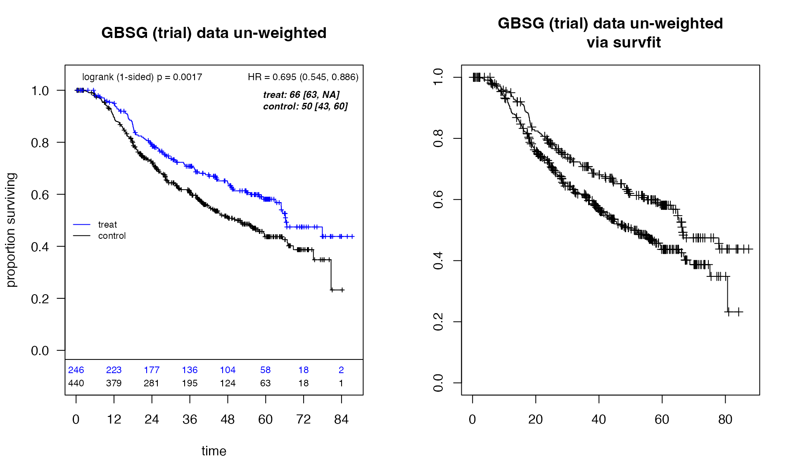
Include 95% CIs
plot_weighted_km(dfcount=dfcount_gbsg, conf.int=TRUE, show.logrank = TRUE, ymax = 1.05)
title(main="GBSG (trial) data un-weighted")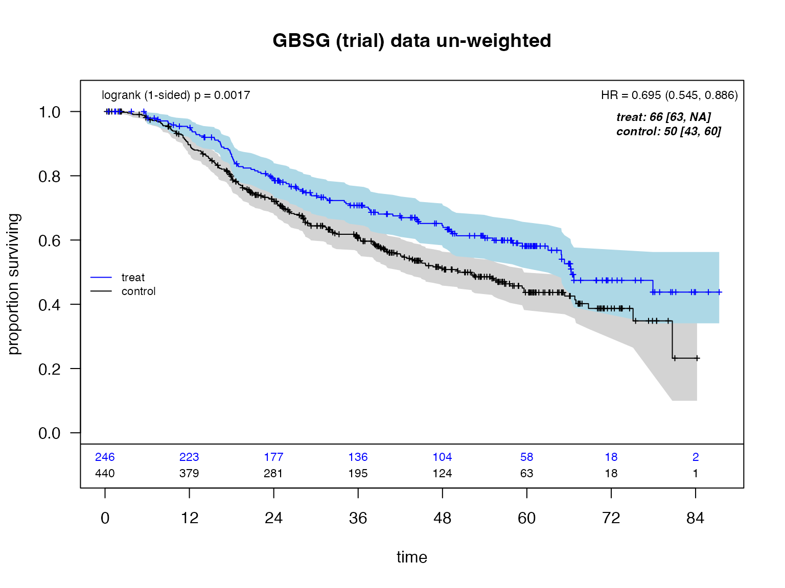
Rotterdam observational data analysis with weighting
—- Propensity Score Weighting (Rotterdam) —-
Prepare Rotterdam data
gbsg_validate <- within(rotterdam, {
rfstime <- ifelse(recur == 1, rtime, dtime)
t_months <- rfstime / 30.4375
time_months <- t_months
status <- pmax(recur, death)
ignore <- (recur == 0 & death == 1 & rtime < dtime)
status2 <- ifelse(recur == 1 | ignore, recur, death)
rfstime2 <- ifelse(recur == 1 | ignore, rtime, dtime)
time_months2 <- rfstime2 / 30.4375
grade3 <- ifelse(grade == "3", 1, 0)
treat <- hormon
event <- status2
tte <- time_months
id <- as.numeric(1:nrow(rotterdam))
SG0 <- ifelse(er <= 0, 0, 1)
})Node positive only to correspond to GBSG population
df_rotterdam <- subset(gbsg_validate, nodes > 0)Baseline demographics table
library(dplyr)
rotterdam2 <- df_rotterdam %>%
mutate(
meno = factor(meno, levels = c(0, 1), labels = c("Pre", "Post")),
grade3 = factor(grade3, levels = c(0, 1), labels = c("Not Grade 3", "Grade 3")),
chemo = factor(chemo, levels = c(0, 1), labels = c("No", "Yes")),
er_negative = factor(ifelse(er == 0, 1, 0), labels = c("ER negative","ER positive"))
)
baseline_table <- create_baseline_table(
data = rotterdam2,
treat_var = "treat",
vars_continuous = c("age", "pgr", "er", "nodes"),
vars_categorical = c("size","meno","chemo","er_negative"),
show_pvalue = TRUE,
show_smd = TRUE
)
baseline_table| Baseline Characteristics by Treatment Arm | |||||
| Characteristic | Control (n=1207) | Treatment (n=339) | P-value1 | SMD2 | |
|---|---|---|---|---|---|
| age | Mean (SD) | 54.1 (13.2) | 62.5 (9.9) | <0.001 | 0.67 |
| pgr | Mean (SD) | 169.7 (320.6) | 108.2 (200.3) | <0.001 | 0.21 |
| er | Mean (SD) | 160.7 (266.0) | 180.6 (271.7) | 0.232 | 0.07 |
| nodes | Mean (SD) | 5.1 (5.0) | 5.7 (4.6) | 0.030 | 0.13 |
| size | 0.581 | 0.03 | |||
| <=20 | 397 (32.9%) | 104 (30.7%) | |||
| 20-50 | 611 (50.6%) | 172 (50.7%) | |||
| >50 | 199 (16.5%) | 63 (18.6%) | |||
| meno | <0.001 | 0.31 | |||
| Pre | 587 (48.6%) | 41 (12.1%) | |||
| Post | 620 (51.4%) | 298 (87.9%) | |||
| chemo | <0.001 | 0.32 | |||
| No | 655 (54.3%) | 311 (91.7%) | |||
| Yes | 552 (45.7%) | 28 (8.3%) | |||
| er_negative | 1.000 | 0.00 | |||
| ER negative | 1058 (87.7%) | 297 (87.6%) | |||
| ER positive | 149 (12.3%) | 42 (12.4%) | |||
| 1 P-values: t-test for continuous, chi-square/Fisher's exact for categorical/binary variables | |||||
| 2 SMD = Standardized mean difference | |||||
Propensity score model
fit.ps <- glm(treat ~ age + meno + size + grade3 + nodes + pgr + chemo + er, data=df_rotterdam, family="binomial")
pihat <- fit.ps$fitted
pihat.null <- glm(treat ~ 1, family="binomial", data=df_rotterdam)$fitted
wt.1 <- pihat.null / pihat
wt.0 <- (1 - pihat.null) / (1 - pihat)
df_rotterdam$sw.weights <- ifelse(df_rotterdam$treat == 1, wt.1, wt.0)
# truncated weights
df_rotterdam$sw.weights_trunc <- with(df_rotterdam, pmin(pmax(sw.weights, quantile(sw.weights, 0.05)), quantile(sw.weights, 0.95)))Un-weighted and weighted analyses
dfcount_rotterdam_unwtd <- get_dfcounting(df=df_rotterdam, tte.name=tte.name, event.name=event.name, treat.name=treat.name, arms=arms, by.risk=24)
dfcount_rotterdam_wtd <- get_dfcounting(df=df_rotterdam, tte.name=tte.name, event.name=event.name, treat.name=treat.name, arms=arms, by.risk=24,
weight.name="sw.weights")—- Plotting Weighted vs Unweighted —-
par(mfrow=c(1,2))
plot_weighted_km(dfcount=dfcount_rotterdam_unwtd, xmed.fraction = 0.65)
title(main="Rotterdam un-weighted K-M curves")
plot_weighted_km(dfcount=dfcount_rotterdam_wtd, xmed.fraction = 0.65)
title(main="Rotterdam weighted K-M curves")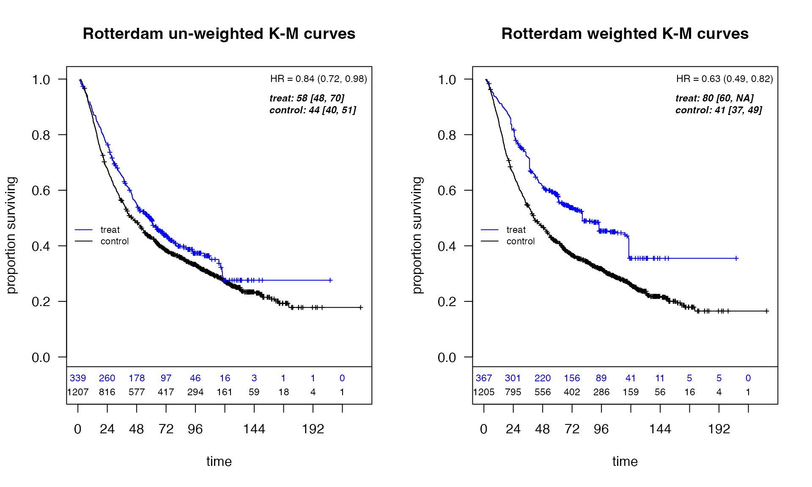
## Compare with GBSG trial data
par(mfrow=c(1,2))
plot_weighted_km(dfcount=dfcount_gbsg, conf.int = TRUE, xmed.fraction = 0.65, show.logrank = TRUE, ymax = 1.05)
title(main="GBSG (trial) data un-weighted K-M curves")
plot_weighted_km(dfcount=dfcount_rotterdam_wtd, conf.int = TRUE, xmed.fraction = 0.65, show.logrank = TRUE, ymax = 1.05)
title(main="Rotterdam weighted K-M curves")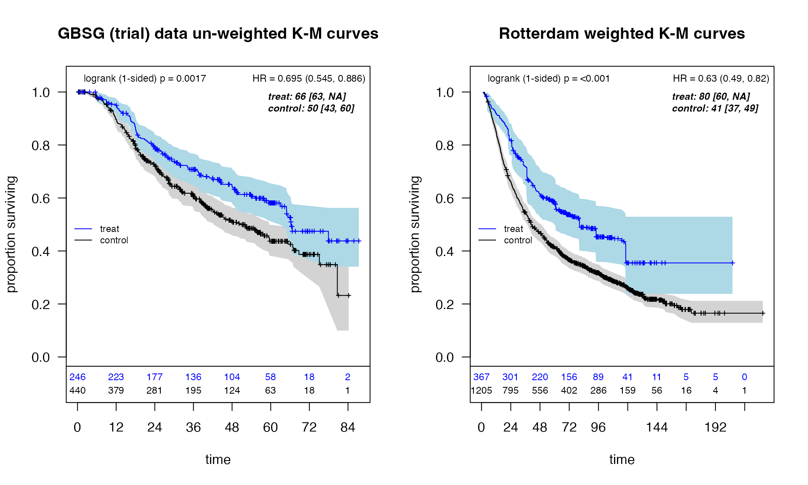
Simultaneous bands and point-wise CIs
Note that the first graph displays 20 (1st 20) resampled approximations to the centered survival difference
for timepoints within “qtau” quartiles of the event times (i.e., for qtau = 2.5% we calculate for time points within the 2.5% and 97.5% quantiles).
—- Simultaneous CI bands —-
par(mfrow=c(1,2))
temp <- plotKM.band_subgroups(
df=df_rotterdam,
xlabel="Months", ylabel="Survival difference",
yseq_length=5, cex_Yaxis=0.7, risk_cex=0.7,
tau_add=42, by.risk = 12, risk_delta=0.075, risk.pad=0.03, ymax.pad = 0.125,
tte.name = tte.name, treat.name = treat.name, event.name = event.name, weight.name = "sw.weights",
draws.band = 1000, qtau = 0.025, show_resamples = TRUE
)
legend("topleft", c("Difference estimate", "95% pointwise CIs"),
lwd=c(2,1), col=c("black"), lty=c(1,2), bty="n", cex=0.7)
title(main="Rotterdam data
propensity score weighted")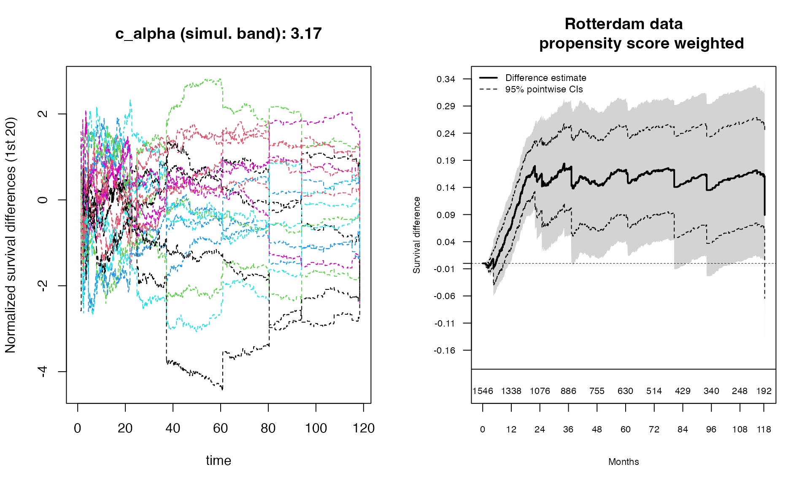
Compare Rotterdam observational data with propensity-score weighting and GBSG randomized data
—- Simultaneous CI bands —-
par(mfrow=c(2,2))
temp <- plotKM.band_subgroups(
df=df_rotterdam,
xlabel="Months", ylabel="Survival difference",
yseq_length=5, cex_Yaxis=0.7, risk_cex=0.7,
tau_add=42, by.risk = 12, risk_delta=0.075, risk.pad=0.03, ymax.pad = 0.125,
tte.name = tte.name, treat.name = treat.name, event.name = event.name, weight.name = "sw.weights",
draws.band = 1000, qtau = 0.025, show_resamples = FALSE
)
legend("topleft", c("Difference estimate", "95% pointwise CIs"),
lwd=c(2,1), col=c("black"), lty=c(1,2), bty="n", cex=0.7)
title(main="Rotterdam data
propensity score weighted")
get_bands <- cumulative_rmst_bands(df = df_rotterdam, fit = temp$fit_itt,
tte.name = tte.name, event.name = event.name, treat.name = treat.name , weight.name = "sw.weights",
draws_sb = 1000, xlab="months", rmst_max_cex = 0.7)
legend("topleft", c("Cumulative RMST estimate", "95% pointwise CIs"),
lwd=c(2,1), col=c("black"), lty=c(1,2), bty="n", cex=0.7)
temp <- plotKM.band_subgroups(
df=df_gbsg,
Maxtau = NULL,
xlabel="Months", ylabel="Survival difference",
yseq_length=5, cex_Yaxis=0.7, risk_cex=0.7,
by.risk = 6, risk_delta=0.075, risk.pad=0.03,
tte.name = tte.name, treat.name = treat.name, event.name = event.name,
draws.band = 1000, qtau = 0.025, show_resamples = FALSE
)
legend("topleft", c("Difference estimate", "95% pointwise CIs"),
lwd=c(2,1), col=c("black"), lty=c(1,2), bty="n", cex=0.75)
title(main="GBSG data")
get_bands <- cumulative_rmst_bands(df = df_gbsg, fit = temp$fit_itt,
tte.name = tte.name, event.name = event.name, treat.name = treat.name,
draws_sb = 1000, xlab="months", rmst_max_cex = 0.75)
legend("topleft", c("Cumulative RMST estimate", "95% pointwise CIs"),
lwd=c(2,1), col=c("black"), lty=c(1,2), bty="n", cex=0.75)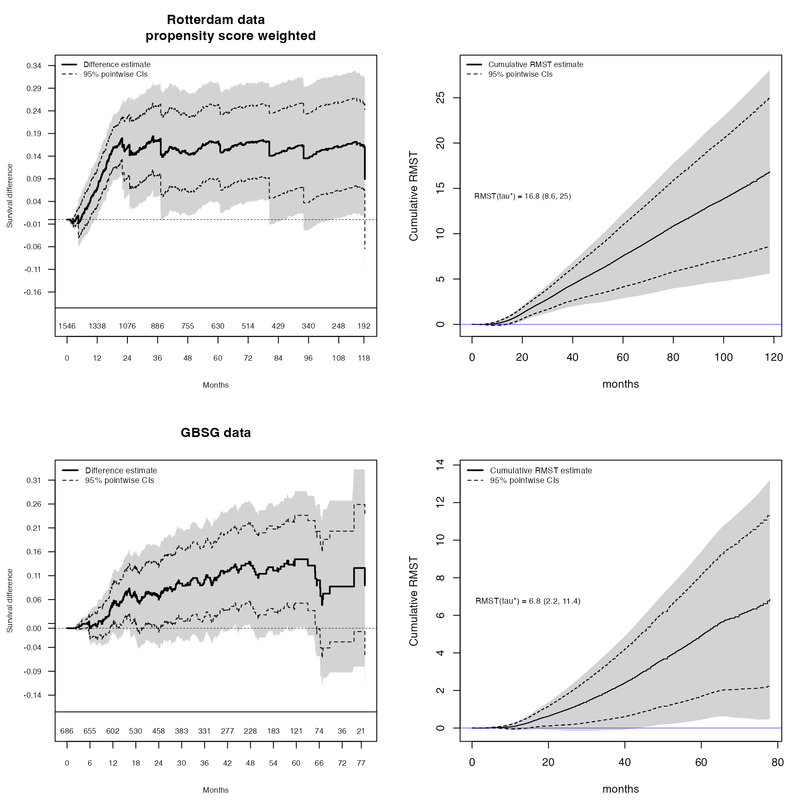
Compare GBSG experimental to Rotterdam control
Propensity score model
df_gbsg_treat <- subset(df_gbsg, treat == 1)
df_rotterdam_control <- subset(df_rotterdam, treat == 0)
df_gbsg_treat <- df_gbsg_treat %>%
mutate(
size = ifelse(size <= 20, "<=20", ifelse(size > 20 & size <=50, "20-50", ">50")),
)
# note: GBSG does not have "chemo" variable
df_gbsg_treat <- df_gbsg_treat[,c("tte","event","treat","age","meno","size","grade3","nodes","pgr","er")]
df_rotterdam_control <- df_rotterdam_control[,c("tte","event","treat","age","meno","size","grade3","nodes","pgr","er")]
# cross-trial-comparison (CTC)
df_CTC <- rbind(df_gbsg_treat, df_rotterdam_control)
fit.ps <- glm(treat ~ age + meno + size + grade3 + nodes + pgr + er, data = df_CTC, family="binomial")
pihat <- fit.ps$fitted
pihat.null <- glm(treat ~ 1, family="binomial", data = df_CTC)$fitted
wt.1 <- pihat.null / pihat
wt.0 <- (1 - pihat.null) / (1 - pihat)
df_CTC$sw.weights <- ifelse(df_CTC$treat == 1, wt.1, wt.0)
# truncated weights
df_CTC$sw.weights_trunc <- with(df_CTC, pmin(pmax(sw.weights, quantile(sw.weights, 0.05)), quantile(sw.weights, 0.95)))Baseline demographics table
df_CTC$er_negative <- ifelse(df_CTC$er == 0, 1, 0)
baseline_table <- create_baseline_table(
data = df_CTC,
treat_var = "treat",
vars_continuous = c("age", "pgr", "er", "nodes"),
vars_categorical = c("size","meno","er_negative"),
show_pvalue = TRUE,
show_smd = TRUE
)
baseline_table| Baseline Characteristics by Treatment Arm | |||||
| Characteristic | Control (n=1207) | Treatment (n=246) | P-value1 | SMD2 | |
|---|---|---|---|---|---|
| age | Mean (SD) | 54.1 (13.2) | 56.6 (9.4) | <0.001 | 0.20 |
| pgr | Mean (SD) | 169.7 (320.6) | 124.3 (249.7) | 0.014 | 0.15 |
| er | Mean (SD) | 160.7 (266.0) | 125.8 (191.1) | 0.016 | 0.14 |
| nodes | Mean (SD) | 5.1 (5.0) | 5.1 (5.3) | 0.923 | 0.01 |
| size | <0.001 | 0.14 | |||
| <=20 | 397 (32.9%) | 67 (27.2%) | |||
| >50 | 199 (16.5%) | 14 (5.7%) | |||
| 20-50 | 611 (50.6%) | 165 (67.1%) | |||
| meno | <0.001 | 0.18 | |||
| 0 | 587 (48.6%) | 59 (24.0%) | |||
| 1 | 620 (51.4%) | 187 (76.0%) | |||
| er_negative | 0.501 | 0.02 | |||
| 0 | 1058 (87.7%) | 220 (89.4%) | |||
| 1 | 149 (12.3%) | 26 (10.6%) | |||
| 1 P-values: t-test for continuous, chi-square/Fisher's exact for categorical/binary variables | |||||
| 2 SMD = Standardized mean difference | |||||
dfcount_CTC_unwtd <- get_dfcounting(df = df_CTC, tte.name=tte.name, event.name=event.name, treat.name=treat.name, arms=arms, by.risk=24)
dfcount_CTC_wtd <- get_dfcounting(df=df_CTC, tte.name=tte.name, event.name=event.name, treat.name=treat.name, arms=arms, by.risk=24,
weight.name="sw.weights")
par(mfrow=c(2,2))
plot_weighted_km(dfcount=dfcount_gbsg, conf.int = TRUE, xmed.fraction = 0.65, show.logrank = TRUE, ymax = 1.2, show.med = FALSE)
title(main="GBSG (trial) data un-weighted K-M curves")
plot_weighted_km(dfcount=dfcount_CTC_wtd, conf.int = TRUE, xmed.fraction = 0.65, show.logrank = TRUE, ymax = 1.2, show.med = FALSE)
title(main="CTC weighted K-M curves")
plot_weighted_km(dfcount=dfcount_CTC_unwtd, conf.int = TRUE, xmed.fraction = 0.65, show.logrank = TRUE, ymax = 1.2, show.med = FALSE)
title(main="CTC un-weighted K-M curves")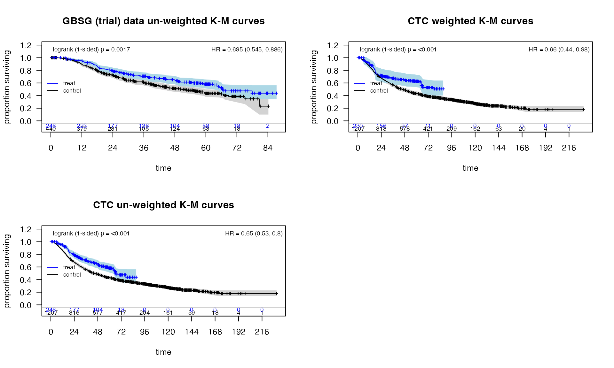
Cumulative weighted log-rank statistics
We note that the log-rank test restricts comparisons to where both groups have follow-up
As illustrated below we view the cumulative log-rank test. Notice how it is flat for time points .
par(mfrow=c(1,1))
ymin <- -1
ymax <- 5
temp <- wlr_cumulative(dfcount_CTC_wtd, scheme_params = list(rho = 0, gamma = 0), scheme = "fh", return_cumulative = TRUE)
with(temp, plot(time, z.score, xlab="time", ylab="cumulative log-rank Z", type="s", ylim=c(ymin,ymax))
)
abline(h = qnorm(0.975), lwd=2, col="red")
abline(v = 80, lwd=1, col="blue", lty=2)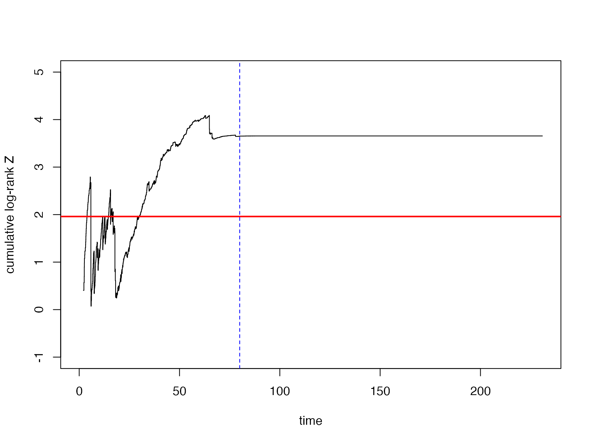
With such dramatic difference in follow-up
It may make more sense to compare K-M differences and RMSTs over comparable ‘horizon’
—- Simultaneous CI bands —-
draws <- 1000
par(mfrow=c(2,2))
temp <- plotKM.band_subgroups(
df=df_gbsg,
Maxtau = NULL,
xlabel="Months", ylabel="Survival difference",
yseq_length=5, cex_Yaxis=0.7, risk_cex=0.7,
by.risk = 6, risk_delta=0.075, risk.pad=0.03,
tte.name = tte.name, treat.name = treat.name, event.name = event.name,
draws.band = draws, qtau = 0.025, show_resamples = FALSE
)
legend("topleft", c("Difference estimate", "95% pointwise CIs"),
lwd=c(2,1), col=c("black"), lty=c(1,2), bty="n", cex=0.75)
title(main="GBSG data")
get_bands <- cumulative_rmst_bands(df = df_gbsg, fit = temp$fit_itt,
tte.name = tte.name, event.name = event.name, treat.name = treat.name,
draws_sb = draws, xlab="months", rmst_max_cex = 0.75)
legend("topleft", c("Cumulative RMST estimate", "95% pointwise CIs"),
lwd=c(2,1), col=c("black"), lty=c(1,2), bty="n", cex=0.75)
temp <- plotKM.band_subgroups(
df=df_CTC,
xlabel="Months", ylabel="Survival difference",
yseq_length=5, cex_Yaxis=0.7, risk_cex=0.7,
tau_add=42, by.risk = 12, risk_delta=0.075, risk.pad=0.03, ymax.pad = 0.125,
tte.name = tte.name, treat.name = treat.name, event.name = event.name, weight.name ="sw.weights",
draws.band = draws, qtau = 0.025, show_resamples = FALSE
)
legend("topleft", c("Difference estimate", "95% pointwise CIs"),
lwd=c(2,1), col=c("black"), lty=c(1,2), bty="n", cex=0.7)
title(main="CTC data")
get_bands <- cumulative_rmst_bands(df = df_CTC, fit = temp$fit_itt,
tte.name = tte.name, event.name = event.name, treat.name = treat.name , weight.name = "sw.weights",
draws_sb = draws, xlab="months", rmst_max_cex = 0.7)
legend("topleft", c("Cumulative RMST estimate", "95% pointwise CIs"),
lwd=c(2,1), col=c("black"), lty=c(1,2), bty="n", cex=0.7)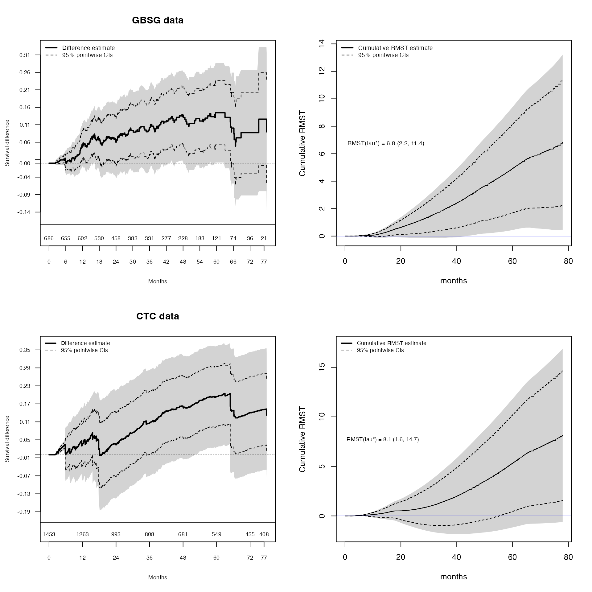
GBSG subgroup differences along with ITT simultaneous band:
Note that er=0 subgroup was identified as questionable benefit.
—- Subgroup Band Plot —-
par(mfrow=c(1,1))
sg_labs <- c("er == 0","er > 0", "meno == 0", "meno ==1")
sg_cols <- c("blue", "brown", "green", "turquoise")
# Randomly sample colors from the built-in palette
# n_sg <- length(sg_labs)
# set.seed(123) # for reproducibility
# sg_cols <- sample(colors(), n_sg)
temp <- plotKM.band_subgroups(
df=df_gbsg,
sg_labels = sg_labs,
sg_colors = sg_cols,
xlabel="Months", ylabel="Survival difference",
yseq_length=5, cex_Yaxis=0.7, risk_cex=0.7,
tau_add=42, by.risk=6, risk_delta=0.05, risk.pad=0.03, draws.band = 1000,
tte.name = tte.name, treat.name = treat.name, event.name = event.name
)
legend("topleft", c("ITT", sg_labs),
lwd=2, col=c("black", sg_cols), bty="n", cex=0.75)
title(main="ITT and subgroups")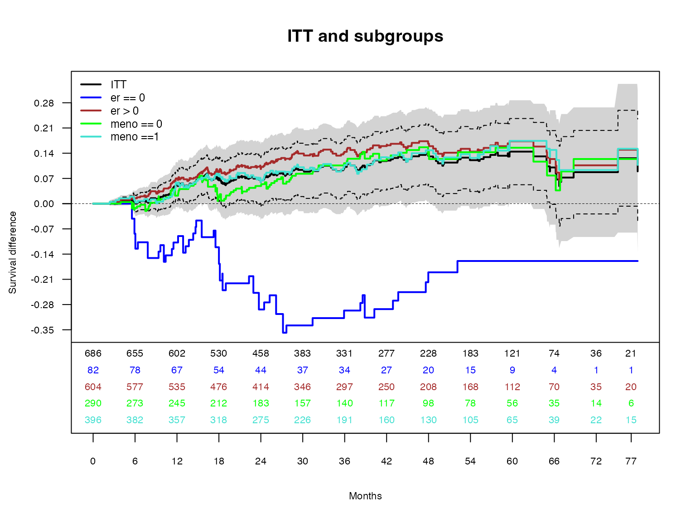
Look at GBSG er>0 subgroup population
—- Simultaneous CI bands —-
par(mfrow=c(1,2))
temp <- plotKM.band_subgroups(
df = subset(df_gbsg, er > 0),
xlabel="Months", ylabel="Survival difference",
yseq_length=5, cex_Yaxis=0.7, risk_cex=0.7,
by.risk=6, risk_delta=0.075, risk.pad=0.03,
tte.name = tte.name, treat.name = treat.name, event.name = event.name, draws.band = 1000, qtau = 0.025, show_resamples = TRUE
)
legend("topleft", c("Difference estimate", "95% pointwise CIs"),
lwd=c(2,1), col=c("black"), lty=c(1,2), bty="n", cex=0.75)
title(main="Estrogen receptor positive (er>0) sub-population")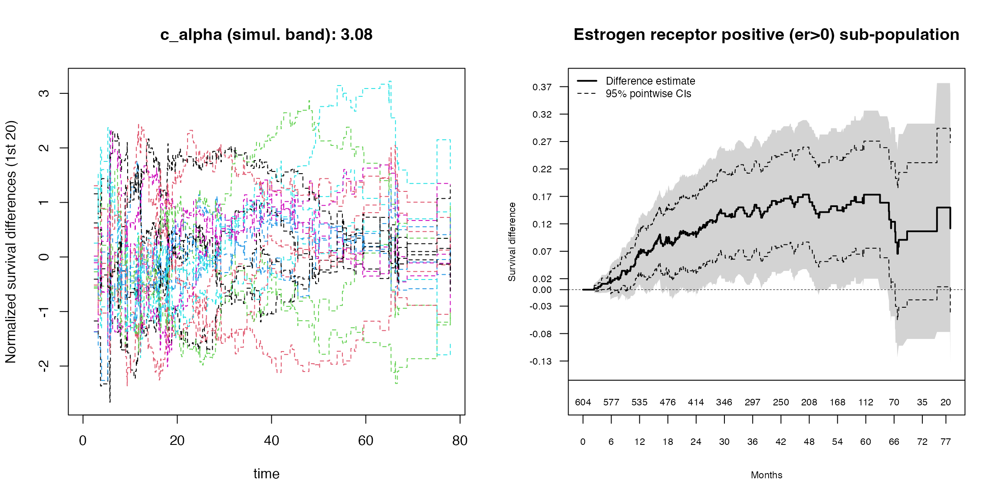
Weighted Cox Analysis of Rotterdam data with time-dependent, and subject-specific [ps weighting] weighting
##
## Attaching package: 'data.table'## The following objects are masked from 'package:dplyr':
##
## between, first, last
library(gt)
dfcount <- dfcount_rotterdam_wtd
get_rg <- cox_rhogamma(dfcount = dfcount, scheme = "fh", scheme_params = list(rho = 0, gamma = 0), draws = 1000, verbose = FALSE)
# Note: with case-weights (here propensity-score weighting) recommend asymptotic versions of SEs
res <- data.table()
res$analysis <- "FH(0,0)"
res$z <- get_rg$z.score
res$hr <- get_rg$hr_ci_asy$hr
res$lower <- get_rg$hr_ci_star$lower
res$upper <- get_rg$hr_ci_star$upper
# res$lower <- get_rg$hr_ci_asy$lower
# res$upper <- get_rg$hr_ci_asy$upper
# compare with coxph()
#cat("Comparison with coxph with weighting, coxph:", dfcount$cox_results$cox_text, "\n")
#cat("Mine:", get_rg$cox_text_star, "\n")
res_update <- res
get_rg <- cox_rhogamma(dfcount = dfcount, scheme = "fh", scheme_params = list(rho = 0, gamma = 1), draws = 1000, verbose = FALSE)
res <- data.table()
res$analysis <- "FH(0,1)"
res$hr <- get_rg$hr_ci_asy$hr
res$lower <- get_rg$hr_ci_star$lower
res$upper <- get_rg$hr_ci_star$upper
res$z <- get_rg$z.score
res_update <- rbind(res_update, res)
get_rg <- cox_rhogamma(dfcount = dfcount, scheme = "fh_exp2", draws = 1000, verbose = FALSE)
res <- data.table()
res$analysis <- "FH_exp2"
res$hr <- get_rg$hr_ci_asy$hr
res$lower <- get_rg$hr_ci_star$lower
res$upper <- get_rg$hr_ci_star$upper
res$z <- get_rg$z.score
res_update <- rbind(res_update, res)
get_rg <- cox_rhogamma(dfcount = dfcount, scheme = "MB", scheme_params = list(mb_tstar = 12), draws = 1000, verbose = FALSE)
res <- data.table()
res$analysis <- "MB(12)"
res$hr <- get_rg$hr_ci_asy$hr
res$lower <- get_rg$hr_ci_star$lower
res$upper <- get_rg$hr_ci_star$upper
res$z <- get_rg$z.score
res_update <- rbind(res_update, res)
get_rg <- cox_rhogamma(dfcount = dfcount, scheme = "custom_time", scheme_params = list(t.tau = 6, w0.tau = 0, w1.tau = 1), draws = 1000, verbose = FALSE)
res <- data.table()
res$analysis <- "zero_one(6)"
res$hr <- get_rg$hr_ci_asy$hr
res$lower <- get_rg$hr_ci_star$lower
res$upper <- get_rg$hr_ci_star$upper
res$z <- get_rg$z.score
res_update <- rbind(res_update, res)
res_update %>% gt() %>% fmt_number(decimals = 3) | analysis | z | hr | lower | upper |
|---|---|---|---|---|
| FH(0,0) | 5.894 | 0.632 | 0.494 | 0.824 |
| FH(0,1) | 4.188 | 0.693 | 0.513 | 0.954 |
| FH_exp2 | 5.502 | 0.650 | 0.504 | 0.855 |
| MB(12) | 5.893 | 0.632 | 0.494 | 0.825 |
| zero_one(6) | 5.928 | 0.619 | 0.481 | 0.813 |
Some checks on results
Check weighted K-M SE’s with survfit
dfcount_rotterdam_wtd <- get_dfcounting(df=df_rotterdam, tte.name=tte.name, event.name=event.name, treat.name=treat.name, arms=arms, by.risk=24,
weight.name="sw.weights", check.seKM = TRUE, draws = 0)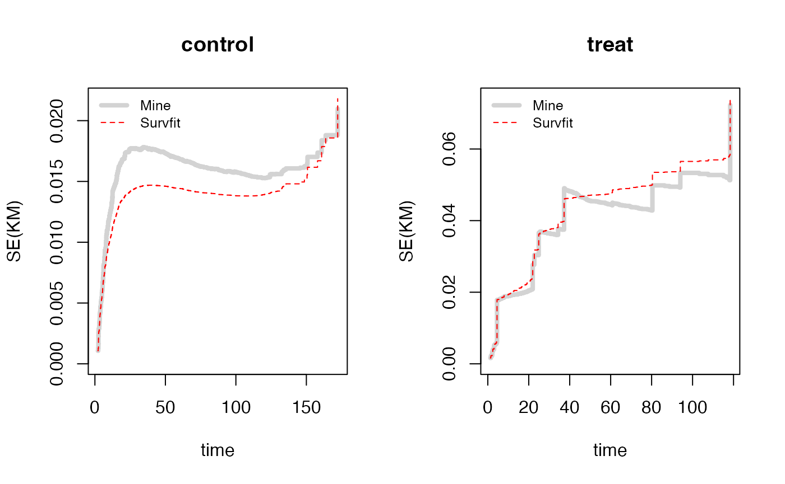
Check SE’s calculated via resampling (draws = 5000)
Note that draws = 5000 does not take much time, but can be reduced to around 500 for sufficient accuracy.
dfcount_rotterdam_wtd <- get_dfcounting(df=df_rotterdam, tte.name=tte.name, event.name=event.name, treat.name=treat.name, arms=arms, by.risk=24,
weight.name="sw.weights", check.seKM = TRUE, draws = 5000)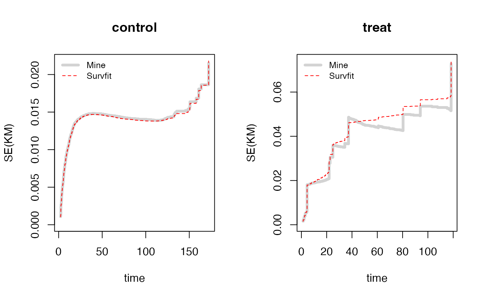
Compare with the adjustedCurves package
# Compare with adjustedCurves
library(adjustedCurves)## Warning: package 'adjustedCurves' was built under R version 4.5.2##
## Attaching package: 'pammtools'## The following object is masked from 'package:stats':
##
## filter
df_rotterdam$hormon2 <- with(df_rotterdam, factor(hormon, labels=c("No","Yes")))
ps_model <- glm(hormon2 ~ age+meno+size+grade+nodes+pgr+chemo+er, data = df_rotterdam, family="binomial")
iptw <- adjustedsurv(data=df_rotterdam, variable="hormon2", ev_time="time_months", event = "status", method = "iptw_km", treatment_model = ps_model, conf_int = TRUE)Compare KM plots with adjustedCurves package
plot_weighted_km(dfcount=dfcount_rotterdam_wtd, conf.int = TRUE)
title(main="Rotterdam weighted K-M curves")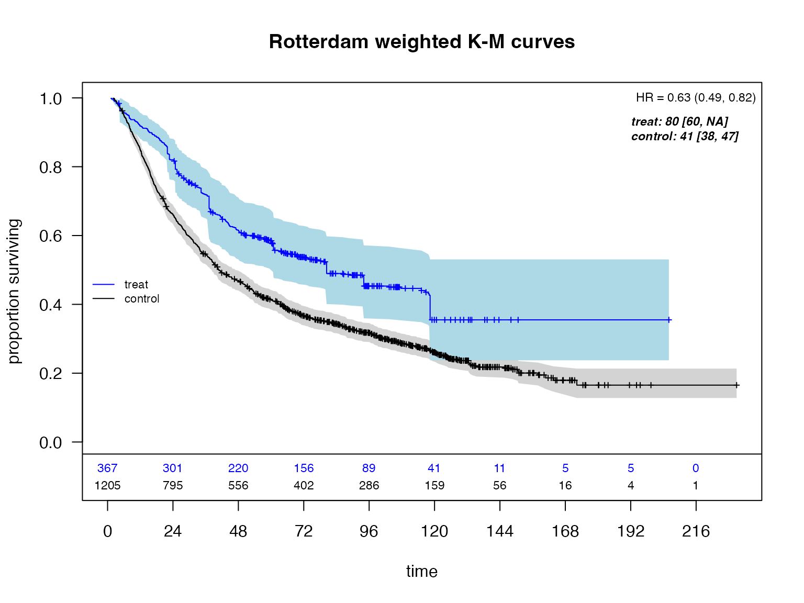
plot(iptw, conf_int = TRUE, legend.title = "Hormonal therapy")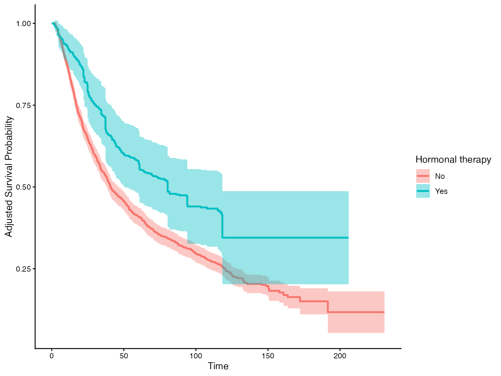
Compare SE’s with adjustedCurves package
# Check SEs
par(mfrow=c(1,2))
df_mine <- dfcount_rotterdam_wtd
df_check <- subset(iptw$adj, group == "No")
yymax <- max(c(sqrt(df_mine$sig2_surv0[df_mine$idv0.check]), df_check$se))
toget <- df_mine$idv0.check
tt <- df_mine$at_points[toget]
yy <- sqrt(df_mine$sig2_surv0)[toget]
plot(tt,yy, type="s", lty=1, col="lightgrey", lwd=4, ylim=c(0,yymax), xlab="time", ylab="SEs")
with(df_check, lines(time, se, type="s", lty=2, lwd=1, col="red"))
title(main="Control SEs")
df_check <- subset(iptw$adj, group == "Yes")
yymax <- max(c(sqrt(df_mine$sig2_surv1[df_mine$idv1.check]), df_check$se))
toget <- df_mine$idv1.check
tt <- df_mine$at_points[toget]
yy <- sqrt(df_mine$sig2_surv1)[toget]
plot(tt,yy, type="s", lty=1, col="lightgrey", lwd=4, ylim=c(0,yymax), xlab="time", ylab="SEs")
with(df_check, lines(time, se, type="s", lty=2, lwd=1, col="red"))
title(main = "Treat SEs")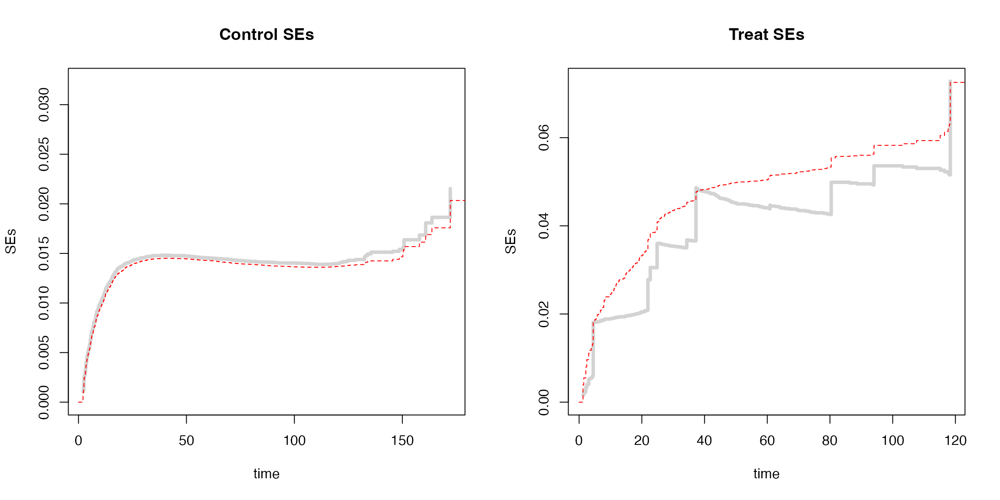
Check log-rank statistics
# dfcount_gbsg contains logrank (chisq) stats from specified scheme (default is standard logrank rho=0 and gamma=0) from 3 sources:
# (1) wlr_estimates function
# (2) survdiff which only provides rho options so gamma !=0 is not available
# (3) z_score_calculations function (from a Cox score-test perspective)
check_results(dfcount_gbsg)##
## Test Statistic Comparison:
## (These should be approximately equal)
##
## zlr_sq logrank_chisq zCox_sq
## 8.564781 8.564781 8.564781
##
## Relative difference: 1.286e-12%
# Check wlr_dhat_estimates which calculates from any scheme based on counting dataset
# In addition, calculates dhat's at tzero as well as correlation with log-rank
temp <- wlr_dhat_estimates(dfcounting = dfcount_gbsg, scheme_params = list(rho = 0, gamma = 0), scheme = "fh", tzero = 12)
temp$z.score^2## [1] 8.564781- Stratified by grade, just for illustration
res <- df_counting(df=df_gbsg, tte.name=tte.name, event.name=event.name, treat.name=treat.name, arms=arms, strata.name="grade")stratified
with(res,lr_stratified^2/sig2_lr_stratified)## [1] 7.395797
# survdiff stratified
res$logrank_results$chisq## [1] 7.395797
# Cox score stratified
with(res,z.score_stratified^2)## [1] 7.395797non-stratified (should be same as above results without stratification)
with(res,lr^2/sig2_lr)## [1] 8.564781
with(res,z.score^2)## [1] 8.564781
# Restore when done
par(oldpar)